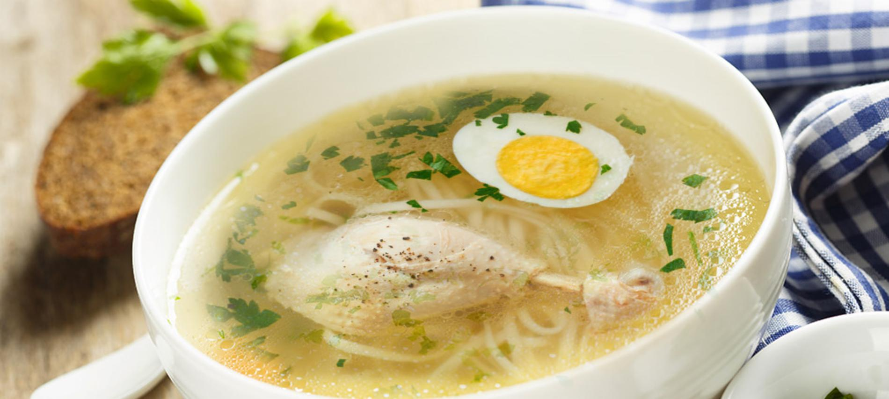

Caldo de Gallina

Descripcion:
Cuando el invierno empieza a sentirse el delicioso Caldo de Gallina es lo
mejor para calentarnos y enfrentarlo. Este caldo es muy popular en todo el
Perú,
preparado a base de carne de gallina y verduras, es muy consumido,
especialmente porque ayuda a aliviar los malestares de la resaca.
Además, si estás resfriado también este plato te hará sentir mucho mejor.
Ingredientes:
- 4 presas grandes de gallina
- 6 huevos, de los cuales 4 deben estar cocidos (huevos duros)
- 5 papas medianas, de preferencia amarilla
- 2 zanahorias
- 3 ramas de apio
- 3 ramas de puerro
- 1 pieza grande de kion(jengibre)entero
- 1/2kg de espaguetis
- 1 atado de cebolla china(cebollin)cortado en trozos muy pequeño
- Sal y pimienta al gusto
Pasos de la Preparacion:
-
En una olla grande pon 3 litros de agua y hiérvela.Cuando el agua esté
hirviendo coloca las piezas previamente limpiadas cuidadosamente sin
nada de grasa.
-
Cuando hayan pasado 30 minutos de la gallina hirviendo, coloca las
zanahorias previamente peladas, las ramas de apio y puerro, el kion
cortado en dados medianos y una papa.
-
Después de 20 minutos retira las ramas de apio, puerro, una zanahoria y
un trozo de kion (jengibre). Licúalos todos juntos y agrégalos al caldo.
- Agrega los dos huevos, mueve y rompe las yemas.
-
Deja cocinar todo por 10 minutos más y luego agrega las 4 papas
amarillas (de preferencia) peladas y cortadas en mitades. Agrega sal,
pimienta al gusto y cocina por 20 minutos hasta que la papa esté lista.
- Ahora sólo corrige la sal si es necesario y listo.
-
En otra olla prepara los tallarines (espaguetis). El tiempo dependerá
del tipo y la marca, pero suelen ser 10 minutos más o menos.
REGRESAR A PRINCIPAL